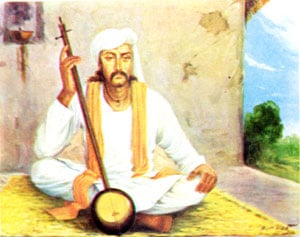

Bhagat Jaidev, whose two hymns are included in the Guru Granth Sahib, was a renowned Sanskrit poet who wrote the "Gitgovind". He was born in Kenduli, which is located around twenty miles from Suri in the modern district of Birbhum in Lower Bengal, India. His father, Bhoidev, was a Brahman from Kanauj, and his mother's name was Bamdevi.
Jaidev became the most famous among the five distinguished poets who lived at the court of Lakshman Sen, the King of Bengal, who ruled around 1170. These five poets were known as the "five jewels" of Lakshman Sen's court, and the king was so proud of them that he erected a monument to preserve their names for future generations.
Little is known about Jaidev's early life. However, it is certain that from a young age, he was a diligent student of Sanskrit literature and had exceptional poetic talents. The author of "Bhagat Mal" describes him as an incarnation and a treasure of melody, which he preferred to enjoy himself due to his ascetic habits rather than sharing his brilliant gifts with the world.

Jaidev wandered through several countries, carrying only a water-pot and a patched coat of a mendicant. He didn't consider pens, ink, and paper as necessities, which are usually essential for literary people. His dedication to love only God was so strong that he wouldn't sleep under the same tree for two consecutive nights, fearing he might develop an undue preference for it and forget his Creator.
According to the chronicler, God chose to withdraw Jaidev from his ascetic life with the intention of saving the human race. To achieve this, God devised a plan in which an Agnihotri Brahman from Jagannath, who had a beautiful daughter named Padamavati, brought her up to dedicate her as a dancing girl to the local idol through many offerings and prayers.
When the Brahman presented his daughter to the idol, he was instructed to give her away to the great saint Jaidev. The Brahman brought Padamavati to Jaidev and informed him of the divine decision in his favor. However, Jaidev tried to reason with the Brahman and suggested that he should give his daughter to someone wealthier and more suitable for her instead of a homeless ascetic like himself.
The Brahman responded by saying that he could not disobey God's order. Jaidev, in turn, argued that God is the master of everything and is all-powerful. He may have thousands of wives, but for Jaidev, one wife was the same as a hundred thousand. He did not have the need or ability to maintain more than one.
After further discussion, in which the Brahman failed to convince Jaidev, he left his daughter with him. Before leaving, the Brahman instructed Padamavati to remain with Jaidev and obey him according to the instructions laid down for wives in the Hindu sacred writings, as it would be impious to act in opposition to the will of God.
The young girl remained with Jaidev, following him like his shadow and attending to his every need. Jaidev often expressed to her the futility of living with him, saying, "You are wise. Try to improve your position. I have no power to provide for and take care of you." She replied, "What power does a poor creature like me have? You can do as you please. I am a sacrifice to you and will never leave you."
It is believed that Jaidev began composing his celebrated poem, the "Gitgovind," after building a hut for his spouse and setting up an idol in it for worship. This was preceded by his first composition, a drama called "Rasana Raghava," and followed by an essay on the graces of style called "Chandralok." It seems that Jaidev's genius sought an outlet, and with experience of life, a change came over his religious opinions. He resolved to no longer live as a hermit, accept the wife offered to him, seek worldly fame and pleasure. The narrative introduces God ex machina to save Jaidev from charges of inconsistency and submission to human passion.
The Gitgovind is a well-known poem in both the eastern and western hemispheres. It has been translated into English prose and paraphrased in English verse. It is perhaps a unique example of a great popular poem composed in a dead language. Although Sanskrit was still used in the twelfth century of the Christian era, much like Latin was in Europe during the same period, the great age of Sanskrit as a living language had passed away, and it was no longer the only recognized Indian vehicle of men's thoughts and aspirations. Nevertheless, the Gitgovind is still widely remembered and nightly chanted in the Karnatik countries and other parts of India, as it is ostensibly a love song and its strains are sweet and resonate with the human heart.
While composing the Gitgovind, Jaidev had portrayed the heroine Radhika as angry with the hero Krishan for loving other women. Krishan tries to make amends and asks Radhika to adorn his head with the lotus leaves of her feet. However, Jaidev realized that it would be disrespectful to his god if a woman put her feet on his head. So he decided to change the sentence later. While he went for a bath, he left the poem unfinished. Upon returning, he found that the verse had been completed exactly as he had intended. He was surprised and asked his wife how it had happened. She told him that he himself had returned and completed the verse before leaving again. Jaidev understood that it was Krishan himself who had completed the verse, thus sanctifying the composition. The fame of this event and of the poem spread widely, and Jaidev achieved the great renown he had sought. Today, the Gitgovind is well-known and still chanted in many parts of India, as it is a beautiful love song that resonates with people's hearts.
Satvika, the King of Urisa (Orissa) at the time, was a poet and scholar as well. He had unknowingly chosen the same topic as Jaidev for his poem, and it seems that he had produced a work of respectable merit. He instructed his Brahmans to make copies of his poem and circulate them. However, when the Brahmans presented him with Jaidev's composition, they were trying to convey that the Raja's poem was no match for Jaidev's work. It was like comparing the light of a lamp with the brilliance of the sun. Despite the Brahmans' criticism, the King refused to accept it due to his pride. Instead, he had both poems placed in the temple of his capital and promised to accept the decision of the deity about which one was superior.
The idol in the temple rejected the king’s Gitgovind and favored Jaidev’s. This caused the king to feel dishonored, and he was overcome by shame and jealousy. He decided to drown himself. However, Krishan appeared to him and advised against it. Krishan acknowledged that the king’s poetic merit was not equal to Jaidev’s, but to compensate for his disappointment, Krishan ordered that one of the king’s verses should be included in each of the twelve cantos of Jaidev’s poem. This would allow both compositions to be distributed throughout the world and be remembered for generations to come. This was done as directed by Krishan.
The Gitgovind was highly esteemed, as evidenced by a well-known anecdote. A gardener's daughter was singing a verse from the fifth canto of the poem with great enthusiasm while she gathered eggplants. The verse was "The zephyr gently bloweth on the banks of the Yamuna while Krishna tarried in the grove." According to legend, the idol of Jagannath followed her everywhere she went, eager to feast his heart on the sweet strains. However, the idol's thin jacket was torn by brambles during this pursuit. When the king went to worship and saw the condition of the idol's jacket, he asked the priests for an explanation. Upon learning what had happened, the king was convinced of the superiority of Jaidev's work and issued a proclamation that the Gitgovind should only be read in a clean and purified place, as even Jagannath, the lord of the world, himself was known to listen to it.
The composition of the Gitgovind by Jaidev was not only admired by Hindus, but also by people of other faiths. It is said that a Mughal, upon hearing of the divine reverence given to the work, read it with great pleasure. One day while he was riding and singing its verses, he was overwhelmed with joy and felt a connection with Krishan, despite being a Muslim.
Oriental chroniclers were full of praise for Jaidev, considering him as the great chakrawarti or poetic monarch of the world, while other poets were compared to petty kings. Jaidev himself seemed to have acknowledged his own talents as he concluded the Gilgovind by saying, "Let the happy and wise learn from the sons of Jaidev whatever is delightful in the modes of music and whatever is exquisite in the sweet art of love."
Although some parts of the Gitgovind contain sensuous and beautiful descriptions, it is clear that Jaidev meant the poem to be an elaborate religious allegory. This is also emphasized by the author of the Bhagat Mai, who clarifies that the love scenes and rhetorical devices used by Jaidev should not be understood in the sense that people with evil intentions might attach to them. In the poem, Radhika, the heroine, represents heavenly wisdom. The milkmaids who distract Krishna from his loyalty to her are the senses of smell, sight, touch, taste, and hearing. Krishna, who is portrayed as pursuing them, represents the human soul that is drawn towards earthly pleasures. The return of Krishna to his first love signifies the return of the repentant sinner to God, which brings joy in heaven.
After finishing the Gitgovind, Jaidev embarked on a journey and visited Bindraban and Jaipur, the latter being a place where he had received a pressing invitation from the king. During his travels, he encountered a group of tughis (thugs). Recognizing them by their willingness to accompany him on his journey, he immediately gave them all the money and valuables he had in his possession. His reasoning was simple: "Wealth is the basis of sin; gluttony produces disease, and love of the world causes pain, so it is proper to discard all three."
After encountering a group of thugs during his travels, Jaidev offered them all his money and valuables without hesitation, believing that wealth, gluttony, and love of the world were the sources of sin and suffering. The thugs, suspicious of his behavior, assumed that he was planning to have them arrested and decided to kill him. However, one of them argued that killing him would be pointless since they had already obtained his wealth. Instead, they cut off his hands and threw him into a narrow and dark well, where he presumably died.
The Thuggee (sometimes spelled as tuggee) was a secret network of fraternities in India involved in robbing and murdering travelers. The term "thug" has its origin from this word, as many Indian words became part of common English during the British colonial rule in India. The Thugs would befriend travelers and later kill them, typically using a garrote to strangle their victims before robbing them. This practice is said to have occurred from the 17th to the 19th century, with some sources suggesting it could date back to as early as the 13th century.
According to legend, Jaidev accepted his mistreatment as a predetermined fate and turned to contemplation and chanting of God's name. Eventually, the King of Utkal, Karaunch, happened to pass by the well and learned of Jaidev's situation. He ordered him to be rescued, and Jaidev, showing no resentment towards his attackers, claimed that he was born with his injuries when the king asked about their cause. The king was convinced that Jaidev was a holy man and considered himself lucky to have met him.
The king had Jaidev brought to his capital, where he was treated with utmost respect and provided with a separate house, food, and every comfort. The king himself humbly offered to become Jaidev's servant and asked him how he could serve him. Jaidev had only one request: that the king should serve holy men instead of him. The king faithfully obeyed this request with a happy heart and began performing menial tasks for the saints of God who were waiting at his gate.
News of the king's actions soon spread, even reaching the ears of the thugs who had previously attacked Jaidev.
The thugs disguised themselves as religious men and made their way to the king's gate. They were granted an audience with Jaidev, who recognized them but instead of exposing them, he told the king that they were holy men and his brethren. He urged the king to serve and minister to them devoutly, which the king did by honoring them with Oriental politeness and hospitality within the palace.
However, the thugs became anxious for their safety as they realized that Jaidev had recognized them. They requested permission to leave, which was granted. Jaidev, feeling generous, gave them a large sum of money and an escort of soldiers for their protection. While on the journey, the soldiers began talking to the thugs and asked about their relationship with Jaidev, as they had never seen anyone treated so kindly by the king before. The thugs replied that it was not appropriate for them to say and requested the soldiers to keep it a secret, which they promised to do.
The thugs then used their cunning skills, honed by years of practice. They fabricated a story that they and Jaidev had once served a king together. Jaidev had been sentenced to death for an offense, and they had been appointed as his executioners. Instead of killing him, they had merely cut off his hands, saving his life. They claimed that Jaidev was now grateful to them for this act and had convinced the king to treat them with extraordinary attention.
However, it is said that at this point, God could no longer tolerate the false accusations against His saint. As a result, the ground opened up beneath the thugs, and they were swallowed into the pit of hell!
The soldiers returned to Jaidev in disbelief and recounted what had happened. Moved by compassion for the thugs, Jaidev began to tremble and made a gesture of rubbing his hands, an Oriental gesture of expressing grief. It is said that new hands then sprouted from his wrists.
The soldiers were amazed by this miracle and reported it to the king. The king went to Jaidev and prostrated himself before him as a sign of respect for the saint.
The king was deeply curious and begged Jaidev to explain how all the miraculous events had occurred. At first, Jaidev refused to reveal the details, but when pressed by the king, he gave a detailed account of all the circumstances. The king's faith in Jaidev was unshakable, and he believed that the man before him was a divine incarnation, as saints always return good for evil.
Jaidev expressed his desire to return home, and the king, recognizing the saint's importance to his kingdom, begged him to stay. He bowed down before Jaidev and explained that the people of his country had turned towards God and the practice of virtue, thanks to the influence of the saint. He feared that if Jaidev were to depart, his subjects would turn away from their faith. As a further incentive for Jaidev to stay, the king brought Jaidev's wife Padamavati to the palace so that the saint's happiness would be complete, and he would forget about his distant home. Padamavati was given a place in the royal palace, and the queen was ordered to serve her in all menial capacities.
During Padamavati's stay at the court, the queen's brother passed away and his wife was burned alive with him on his funeral pyre. One day, the queen was praising the remarkable devotion of her sister-in-law, but Padamavati smiled in response. When asked the reason for her smile, Padamavati replied that burning oneself alive with one's husband's corpse is not the highest form of affection. She believed that true love and devotion required a woman to sacrifice herself immediately upon hearing of her husband's death. The queen then called Padamavati a "Sati," a term defined as a woman who considers her husband as a god and has no concern for any other deity. Not feeling flattered by the almost unattainable standard of conjugal devotion that Padamavati considered worthy of admiration, the queen decided to test her at the first opportunity.
One day, when Jaidev was away from home, the queen devised a plan to test Padamavati's devotion to her husband. She instructed a royal servant to rush in and inform Padamavati, while she was with the queen, that Jaidev had been killed by a tiger in the forest. As soon as the servant delivered the false news, Padamavati fainted and fell to the ground, appearing to be lifeless.
Upon hearing the news of what had happened, the king severely reprimanded the queen for her cruel test. Life became miserable for the queen, and she even prepared for her own death on a funeral pyre that she had constructed. However, when Jaidev was informed of the situation, he arrived just in time to prevent the queen from being burned alive. He then approached the lifeless body of Padamavati and sang his famous ashtapadis. To everyone's amazement and joy, Padamavati was revived and joined her husband in singing.
Jaidev and his wife had grown tired of their royal lifestyle and were happy to leave behind the grandeur and return to their humble home in Kenduli. There they enjoyed the company of saints and redirected their idolatrous devotion towards the love and worship of the one true God.
Every year on Jaidev's birthday, a religious fair is held in Kenduli, the poet's birthplace. Thousands of Vaishnavs gather to celebrate the occasion by congregating around his cenotaph to worship and sing the most sublime portions of his immortal songs.
Bhagat Jaidev's Bani can be found in the following ANGs (pages) of Guru Granth Sahib Ji:
Bhagat Jaideva, pg. 526
Bhagat Jaideva, pg. 1106